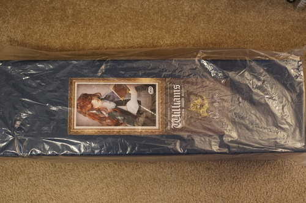
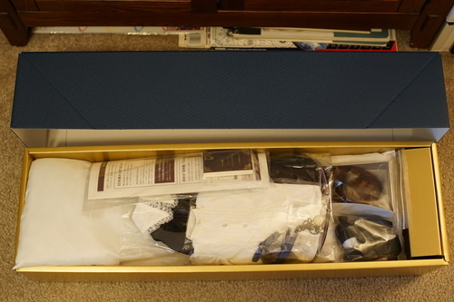

I have received Mother SD's blessing.
Williams is one of those dolls I've had my eye on since 2010. I didn't really consider it possible until recently because he felt too far out of my budget. When I discovered RG Williams, I really started romantic glancing. For the uninitiated, RG Williams is pretty difficult to get! You either had to preorder him on a cruise or win a one-off to get him. I suppose you could also pay about $4k too if you so desired. AND NO I don't like Will enough to pay $1k+ and wait 9 MONTHS for him. No preorders! Never again. I wouldn't take it if it was offered!
Back in November, Volks announced a WS SDGrB Williams, which I believe is my perfect configuration of open eyed Williams. RG Williams is only sold in white, while Williams has only been sold in normal so far. If you want to have a doll with both heads, this head is going to be your best option. I don't think I have an issue with the SD17 body, but I've never held one to find out. I'm not really a fan of the SD17B-H-01 hands. I wouldn't say no to a doll with option hand parts because I don't like the default though! I am a very big fan of my SD13B bodies and this release is on the 13 renewal body. It's 61.5cm so it fits in with my other boys and won't be freakishly taller than them.
I sacrificed No Draw November and started my tribute to Mother SD. I drew 31 days of daily Williams for her. I've seen people draw a picture of their hoped lottery win for good luck, so 31 will ensure a win right? I initially intended to draw until the lottery results (approximately 3 months), but got really tired of drawing fan art. I'd much rather draw MY boys instead and daily Williams takes a lot of time!
The lottery finally opened and I noticed it was GL membership only. I didn't really want to get a GL membership so I could lose, but I went to pay for it and saw the disclaimer saying your order will be cancelled if you use a credit card without your name on it. This was a bit of a panic because I do not own a credit card and they don't accept paypal for it.
I was not able to apply for the GL membership or enter the lottery.I was pretty bummed about it and considered impulse buying Switch Muhyul (thanks, Mima). On February 9, a few days after the lottery results were out, a DoA user posted saying he was up in the webstore. He must have sold terribly! But this was a huge blessing for me. I want to give a big shout out to everyone who didn't enter for him. THANKS!
Volks does accept Paypal for this kind of purchase, so I was able to order him and did immediately. I was terrified they would cancel my order because the Paypal account isn't in my name either, but I got my shipping notice on the 16th and finally relaxed. He made it here after an 11 day wait. My 31 Wills plus 4 more Wills from my friends paid off.
I'm in shock this actually happened. I never expected to recieve a blessing this large for my 31 Wills.
Another shipper box?!
Box 3 emerges finally with escaping English instructions.
 
What a concerning scene to open up to... The tape on his face protector came loose.
I can't see any damage on his faceup, thankfully.
Volks wigs are trash so I won't be opening this one. Encyclopedia Nautica is blank inside, but does have pages. It was enclosed in a plastic baggie as well, but I had just taken it out to check inside.
The small pieces from the outfit set.
And the larger pieces. The cape was not enclosed in a separate baggie like the others. It has a wired bottom edge.
Here's standardized headcap A and Lieselotte's for comparison. It doesn't fit nearly as snugly as Liese's, which can be hard to remove. The resin hook on the standard headcap is a lot thinner! I hope I don't fumble it.
"Super Dollfie" is embossed on the wig stopper on the top of the headcap. The bottom wig stopper is on the head itself and not embossed. So far, my opinion of them is "annoying" but I'll let them annoy me a bit longer before taking a knife to them.
I went through all the 8-9 wigs I own and tried each of them on him. He started reminding me of Sascha!! The sculpts are a little similar. I ended up choosing DOD BES's default for now. The eyes are 18mm split blue/green Lepus eye that I recieved for Christmas from hors. I was curious what kind of doll they meant for because the small pupil makes them look shocking in most dolls that take 18mm eyes. Well, this is it! They are made for Will!
I discovered a hole in the sleeve of the blouse and then thouroughly inspected all clothing pieces. I found a bird's nest of thread in the outer showing leg of the pants. I contacted Volks with pictures and was asked to remove the excess thread on the pants and was sent a replacement blouse. The replacement blouse had a hole in another place. Volks did not consider it a defect when contacted again. The representative did not understand the issue and told me to cut off the fraying yarn as if it was extra fabric and not too little fabric.